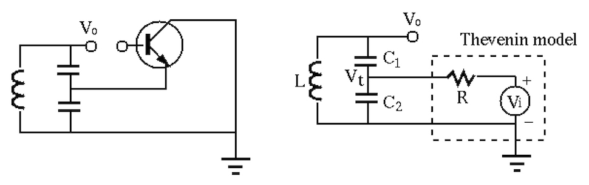

Next: Metal-Oxide-Semiconductor Field-Effect Transistors Up: ch4 Previous: Typical Transistor Circuits
Oscillation in a circuit is undesirable if the circuit is an amplifier or part of a control system which needs to be stable without oscillation. However, oscillation is desirable in many applications such as sinusoidal signal generator, carrier signal generation is broadcast transmission (radio and TV), clock signal in digital systems, etc.
An oscillator is a feedback system composed of a forward path with gain and a feedback path with gain :
For the system to oscillate at a certain frequency, the feedback
needs to be positive for the frequency to be positively reinforced
while passing through the forward path in order to sustain the output
 with zero input . Specifically, the output and the
input
with zero input . Specifically, the output and the
input  of a feedback system are related by
of a feedback system are related by
| (138) |
There exist many different configurations of oscillators based on a
single transistor. Shown below are three typical
Colpitts oscillators:
common-base (CB, left), common emitter (CE, middle), and common
collector (CC, right). All such circuits contain a “tank” LC circuit
composed of an inductor  in parallel with
in parallel with  and
and  in series,
with a resonant frequency
in series,
with a resonant frequency
| where | (139) |
and . All other  s (without a subscript) are coupling
capacitors that have a large enough capacitance and can therefore be
treated as short circuit for AC signals.
s (without a subscript) are coupling
capacitors that have a large enough capacitance and can therefore be
treated as short circuit for AC signals.
Here are the requirements for these circuits to oscillate:
 is the
output, a fraction of which at the middle point between the two
capacitors, “tap point”, is fed-back to the emitter to a positive
feedback loop:
is the
output, a fraction of which at the middle point between the two
capacitors, “tap point”, is fed-back to the emitter to a positive
feedback loop:
| (140) |
is
the output, which is fed-back through the LC tank circuit to the base.
As the tap point is grounded, the sinusoidal voltage across the LC
tank produces opposite voltage polarities at the far ends of
and , i.e.,
and
have opposite phases
and thereby form a positive feedback loop:
| (141) |
 . The feedback from the emitter through the LC tank circuit
to the base form a positive feedback loop:
. The feedback from the emitter through the LC tank circuit
to the base form a positive feedback loop:
| (142) |
More specifically, we consider the common-collector circuit as an example.
To find out why the circuit oscillates and the resonant frequency, we
disconnect the base path of the circuit and consider the open-loop gain
of of the feedback loop. We further model the transistor
by a Thevenin voltage source in series with an internal  , as
shown in the figure:
, as
shown in the figure:

As the load of the Thevenin source, the tank circuit receives an input
at the tap point, and produces an output across the parallel
combination of and in series with . Applying KCL at the tap
point we get:
| (143) |
| (144) |
| (145) |
| i.e. | (146) |
 |
|||
|
(147) |
is zero and the voltage received
by the tank circuit is . Now the output voltage can be found
by voltage divider:
| i.e. | (148) |
to ) is:
| (149) |
We see that when
, the open-loop gain is real but
greater than 1. However, the non-linearity of the transistor as the
feedback path (from to ) will force to become 1. The
circuit is an oscillator with frequency at
.